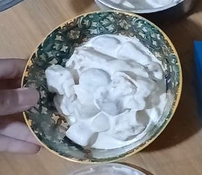

Can of fruit cocktail
Condensed milk
All-purpose cream
Step 1: I prepared my PPE.
Step 2: I prepared the ingredients and equipment
(mise en place).
Step 3: I washed my hands, dried them, and wore gloves.
Step 4: I drained the fruit cocktail.
Step 5: I mixed the fruits with condensed milk
and all-purpose cream in a mixing bowl.
Step 6: I transferred the mixture into a
container and chilled it.
Step 7: Serve.
Before preparing the fruit salad, I wore an apron, tied my hair, washed my hands, and wore gloves to maintain proper hygiene. I made sure that my work area and the tools I used were clean. I also handled the ingredients properly and kept the fruit salad chilled after preparing it.
After chilling, I scooped the fruit salad into a clean bowl. I didn't add any decorations because my recipe didn't include any extra ingredients for that. Sadly, the cream covered the colors of the fruits, but I was so excited to eat it that I forgot to make it look better.
I learned how to make fruit salad, and also how to do it properly. One challenge I faced was editing, my video was too long, and I had to speed it up a bit, it sounds weird but that's fine. Another challenge was making the salad look nice, as I said earlier, the cream covered the fruits' color, so it's all white. I realized that I could have arranged it more carefully before serving. Next time, I'll pay more attention to the presentation instead of getting too excited to eat it. I can use these skills when preparing food for myself and my family.